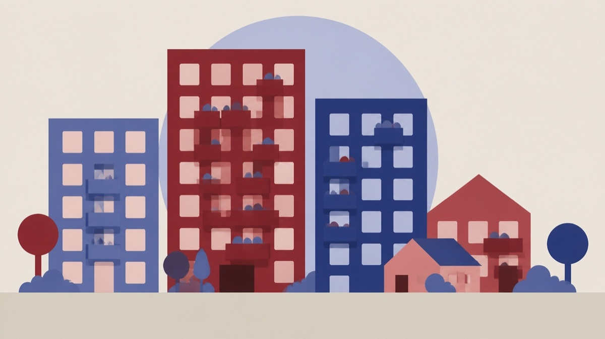

På dagsordenen 1. december, Teknisk Udvalg, Vejle
Forslag til lokalplan nr. 1459 Boligområde ved Grundet Skovby 1. etape og miljøvurdering

Kort fortalt
- Hvem
- Teknisk Udvalg, Vejle Kommune
- Hvornår
- Tirsdag 1. december 2026
- Status
- På dagsordenen. Sagen behandles på mødet.
Er noget forkert her? Skriv til os
Hvad kan du gøre?
- Skriv til politikerne
- Udvalgets møder er lukkede, men du kan skrive til medlemmerne før mødet tirsdag 1. december 2026. Du finder dem på vejle.dk.
Læs hele sagen Kommunens egen tekst
Sagsfremstilling
Figur 1: Kort over lokalplanområdet
Figur 2: Bebyggelsesplan for lokalplanområdet viser bebyggelse i første etape og markering
af fremtidig etape.
Planens historik
Den 27. august 2025 vedtog Byrådet lokalplan nr. 1282 Boligområde ved Grundet Skovby og
tillæg nr. 55 til Vejle Kommuneplan 2021-2033 med miljøvurdering. Den 3. juli 2026 har
Planklagenævnet kendt lokalplanen ugyldig og har dermed ophævet planen med
miljøvurdering. Efter Planklagenævnets opfattelse er det ikke tilstrækkelig sikret med
lokalplanen, at der ikke kan etableres støjfølsom anvendelse i de dele af delområde R2, som
er belastet af støj, og som i følge lokalplanens §3.1 kan anvendes til rekreative formål, friareal,
beplantning vandhåndtering, vej, sti og støjafskærmning. For at rette op på dette skal der
udarbejdes et nyt forslag til lokalplan med tilhørende miljøvurdering.
Teknisk Udvalg besluttede på mødet 11. august 2026, pkt. nr. 128, at igangsætte udarbejdelse
af lokalplan nr. 1459. Det er ikke nødvendigt at udarbejde tillæg til kommuneplanen, idet
ændringerne for området er indarbejdet med tillæg nr. 1 til Vejle Kommuneplan 2025-2037.
Lokalplanens indhold
Lokalplanområdet udgør den nordligste del af Nørremarken. Lokalplanområdet ligger vest for
Viborgvej og nord for erhvervsområdet ved Norgesvej. Mod vest afgrænses området af Store
Grundet Sundhedsskov samt privat skov. Nord for lokalplanområdet ligger Hornstrup Kirkeby.
Store Grundet Allé udgør den sydlige grænse af lokalplanområdet. Lokalplanområdet er ca. 96
ha og der gives mulighed for ca. 170 boliger i form af åben-lav og tæt-lav i 1-2 etager samt
etablering af fællesfunktioner som fx en daginstitution.
Lokalplanen udarbejdes i overensstemmelse med en helhedsplan, der er lavet for området i
Lokalplanen er udarbejdet i overensstemmelse med den ophævede lokalplan nr. 1282. I
forslaget til lokalplanen, er der rettet op på de mangler Planklagenævnet har påpeget, ved at
det i lokalplanens tekst og kortbilag bliver tydeliggjort, hvilke arealer, der kan benyttes
rekreativt, og hvilke der er forbeholdt til støjafskærmning mod støj. Siden lokalplan nr. 1282 er
vedtaget, har Vejdirektoratet udvidet konsekvensområdet for Østjyske Motorveje, således den
nu dækker en del af det østligste område. Når der arbejdes videre med en ny lokalplan for 2.
etape, skal det sikres, at boligbebyggelse inden for konsekvensområdet kan opføres. I
forbindelse med udarbejdelse af lokalplan 1459, er der udarbejdet en støjredegørelse, som
sandsynliggør, at de fremtidige boligområder, inden for støjkonsekvenszonen kan skærmes for
støj ved opsætning af støjvægge ved de enkelte boligområder. Hvis støjbilledet ser anderledes
ud, når lokalplanen for 2. etape udarbejdes, skal der tages højde for dette.
I 2019 blev der udarbejdet en helhedsplan for området mellem Store Grundet i Vejle og
Hornstrup Kirkeby. Området fik kaldenavnet Grundet Skovby. I Helhedsplanen er arealet
disponeret til byudvikling i form af boliger. I helhedsplanen er der arbejdet med landskabet
for at sikre udsigtskiler til/fra Hornstrup kirke. I landskabskilerne sikres arealer
til vandhåndtering. Helhedsplanen er mod vest og nord afgrænset af en rekreativ ramme.
Denne rekreative ramme skaber en afstand til skoven samt til Hornstrup Kirkeby, således
landsbyen ikke vokser sammen med det nye boligområde. Formålet med lokalplanen er at
skabe et plangrundlag, der afspejler helhedsplanens visioner for en grøn by i landskabet.
Lokalplanen skal gøre det muligt at realisere den del af helhedsplanen, der vedrører
adgangsveje, bearbejdning af landskab med vandhåndtering og jordvolde mod syd og vest
samt muliggøre den del af boligområdet, der ligger mod vest. Lokalplanen opdeles i
delområder, som blandt andet udlægger arealer til boliger i form af parcelhusgrunde,
kompaktparceller, rækkehuse, dobbelthuse samt fællesfunktioner i form af daginstitution.
Lokalplanområdet er 96,6 ha.
Boliger
Der kan etableres ca. 170 boliger med denne lokalplan. Grunde til åben-lav skal have
en minimum størrelse på 700 m2. Dertil kan der udstykkes åben-lav boliger som
kompaktparceller, her kan grundene udstykkes med en minimumsstørrelse på 400 m2 og
maksimum 700 m2. Boligområderne til tæt-lav kan udstykkes med en størrelse på minimum
315 m2. Muligheden for tæt-lav grunde på under 400 m 2 gives, idet der etableres store
sammenhængende fælles friarealer, og at de fleste tæt-lav grunde grænser direkte op til fælles
opholdsarealer.
Boliger kan opføres i 2 etager og med en højde på op til 8,5 meter. Boligerne skal placeres
med én af boligens facader parallelt med boligvejen.
Tæt-lav bebyggelse skal have samme arkitektoniske udtryk inden for samme boligvej.
Omvendt skal der skabes variation i de forskellige delområder, dvs. at hver boligvej skal have
et varieret udtryk.
Tage må udføres med tagsten, eternitskiffer, forpatineret zink eller tagpap. Ved sadeltage med
tagpap skal taget udføres med listedækning.
Bebyggelsen skal følge terrænet, for at bebyggelsens placering fremstår så naturligt som
muligt i landskabet. Det betyder, at bebyggelse på kuperede eller skrånende grunde skal
placeres og udformes, så niveauforskelle optages i bebyggelsen enten ved forskudte plan,
med parterreetage eller i 2 etager. Boliggrundene skal terrænreguleres mindst muligt. Hvor der
er behov for at hæve eller sænke terrænet med maksimum +/- 0,5 meter, skal al
jordbearbejdning foregå mindst 1 meter fra skel mod nabo, vej og fælles friareal. Nogle af
grundene skal placeres i en minimums kote, der fremgår af lokalplanens kortbilag. Dette er for
at sikre, at boligernes spildevand kan løbe væk fra grunden via Vejle Spildevands ledninger.
Vej-, sti- og parkeringsforhold
I forbindelse med udarbejdelse af helhedsplanen og lokalplanen er der gennemført
trafikmodelberegninger på Nørremarken nord for Horsensvej. Med baggrund i disse
beregninger, er der arbejdet med, hvorledes man bedst kommer til og fra lokalplanområdet
som gående, cyklist, med offentlig transport og i bil. Samtidig har der været et ønske fra
borgere på Store og Lille Grundet, om at der ikke kom biltrafik direkte mellem Grundet Skovby
og de eksisterende boliger, og derfor er der valgt en løsning, hvor trafikken er adskilt.
Lokalplanområdet trafikbetjenes fra Viborgvej for både gående, cyklister, offentlig transport og
biler. Der etableres en forbedret gang- og cykelforbindelse mod Store og Lille Grundet via
Store Grundet Allé til Grundet Tværvej, og der etableres en busvej fra lokalplanområdet over
Store Grundet Allé til Norgesvej.
Der skal etableres vejadgang til lokalplanområdet fra Viborgvej, hvor der etableres en
rundkørsel. Rundkørslen placeres syd for Gl. Smedevej og Gl. Smedevej forlægges syd om de
to boliger Gl. Smedevej 9 og 11. Gl. Smedevej skal på sigt vejbetjene den nordligste del af
Grundet Skovby, som udvikles i en senere etape.
Der etableres en busvej til lokalplanområdet via Norgesvej, Store Grundet Allé og
adgangsvejen i lokalplanområdet. For cykler og gående er der også adgang til
lokalplanområdet fra Korntoften og Store Grundet Allé, samt fra Viborgvej og Gl. Smedevej.
Adgangsvejen etableres som en facadeløs vej med afstand til boligerne. Adgangsvejen
anlægges med stiudlæg til fodgængere og cyklister. Langs adgangsvejen placeres allétræer på
begge sider af vejen. Boligveje udlægges med fortov. Lokalplanområdets boligområder og
friarealer, bindes sammen indbyrdes og med arealer uden for lokalplanområdet med stier.
Ubebyggede arealer
Helhedsplanen er udarbejdet således, at der først og fremmest holdes afstand til
skovbrynene, Hornstrup Kirkeby samt til støj fra erhverv og veje. Dernæst er der set på,
hvorledes der bedst
muligt bliver skabt gode og interessante ind- og udkigslinjer til Hornstrup Kirke. Dertil er der
arbejdet med vandhåndtering dels på de friholdte arealer, men også i de eksisterende
lavninger, der er i området.
En landskabsarkitekt har udarbejdet en planteplan, som er vedlagt lokalplanen.
Planteplanen og plantelisten er tilpasset den beplantning, der er hjemmehørende omkring
Vejle/Østjylland.
Mellem boligområder og Viborgvej samt virksomheder på Norgesvej etableres jordvolde, som
skal skærme for støj. Ligesom arealerne mellem boliger og skov, etableres støjvoldes
skråninger med en blanding af flere græsser, urter og blomster.
Langs adgangsvejen plantes allétræer på begge sider. Boligvejene får enkeltstående træer i de
interne fælles friarealer. Ved fælles friarealer med eng arealer, opfordres der til, at arealerne
vedligeholdes med et eller to årlige høslet. Ved at slå arealerne over en længere periode,
fremfor over få dage, vil der hele tiden være blomster og højt græs til gavn for smådyr og
insekter.
De store fælles opholdsarealer i delområde G1 og G2 vil være præget af den fritvoksende
beplantning beskrevet herover. Delområde T1 skal anvendes til tekniske løsninger i form af
jordvolde til støjafskærmning, grønne arealer uden mulighed for ophold, plantning. Både
delområde G1, G2 og T1 skal anvendes til håndtering af regn- og overfladevand. I delområde
T1 står der flere egetræer ved kirkestien, som skal bevares.
I delområde V1 langs Store Grundet Allé på strækningen mellem Viborgvej i øst og frem til
boligbebyggelsen i vest, skal der være beplantning på begge sider af vejen. Den eksisterende
beplantning skal i videst mulig omfang bevares. Den eksisterende beplantning kan
vedligeholdes og skal suppleres af nye træer, i takt med gamle træer går ud.
Andet
Der er udlagt et areal på ca. 10.000 m 2 til en daginstitution.
Der kan opsættes en telemast til mobildækning med en højde på maksimalt 36 meter
indenfor lokalplanens område. Alt efter hvor en mast placeres, skal der vises hensyn til
Hornstrup Kirkes fjernomgivelser og skoven.
Lokalplanområdet ligger i landzone. Lokalplanen overfører dele af arealerne til byzone.
Delområde B6, hvor der ikke kan bygges boliger med denne lokalplan, forbliver i landzone indtil
en ny lokalplan overfører arealerne til byzone.
Særlige planmæssige forhold
Landbrugspligten skal søges ophævet hos Landbrugsstyrelsen.
Rundkørsel og adgangsvej anlægges af bygherre. Det er muligt, at Vejle Kommune skal
overtage driften af adgangsvejen efter etablering, idet den muligvis skal benyttes til busvej.
Vurdering af afledte konsekvenser
Der er foretaget en helhedsvurdering af boliglokalplanens afledte konsekvenser, herunder
offentlige investeringer, for at sikre en byudvikling i balance. Det kan være i forhold til f.eks.
skoler, institutioner, idræt, veje, stier og kollektiv trafik.
Helhedsvurderingen viser, at lokalplanen ikke har afledte konsekvenser på de
undersøgte forhold.
Miljøvurdering
Der er udarbejdet en miljøvurdering af forslag til lokalplan nr. 1459 Boligområde ved Grundet
Skovby, Vejle 1. etape, da planen udlægger et stort nyt areal til boligområde i byzone. I
henhold til lov om miljøvurdering af planer og programmer og af konkrete projekter er det
vurderet, at lokalplan nr. 1282 er omfattet af miljøvurderingslovens bilag 2, 10b.
Anlægsarbejder i byzone, herunder opførelse af butikscentre og parkeringsanlæg.
Formålet med miljøvurderingen er at belyse konsekvenserne for miljø, natur, landskab
og mennesker.
Miljørapporten vurderer på følgende emner:
Kirkeomgivelser – Hornstrup Kirke
Lokalplanområdet ligger delvist inden for kirkens fjernomgivelser. Hensyn til kirken sikres
gennem bevaring af kirkestien, landskabskilen og indsigtslinjen, hvilket fastholder
udsigten til og fra kirken.
Byudvikling og afgrænsning til det åbne land
Bygrænsen rykker tættere på Hornstrup Kirkeby. For at sikre en harmonisk overgang
etableres grønne kiler og en landskabeligt tilpasset støjvold.
Påvirkning fra eksisterende virksomheder
En virksomhed sydøst for området genererer støj, hvorfor der opføres en 6 meter høj
støjvold mod syd og øst for at sikre, at Miljøstyrelsens grænseværdier overholdes.
Udledning til vandmiljøet og vandhåndtering regnvand afledes til Hornstrup Bæk, som har
lav vandføring og er følsom over for store udledninger, samtidig har afstrømning til Grejs
Å tidligere har forårsaget oversvømmelser i Vejle. Der er derfor i planlægningen sikret
forsinkelse af vand, så påvirkningen minimeres, selv ved ekstremregn. Med de nævnte
tiltag vurderes planerne ikke at have en væsentlig negativ miljøpåvirkning.
Vejstøj - Med udvikling af motorvejen blev støjkonsekvenszonen samtidig udvidet. Der er
i lokalplanen sikret, via jordvolde, anvendelse osv., at Miljøstyrelsens vejledende
grænseværdier for vejstøj kan overholdes.
Høringsperiode
Jævnfør planloven skal høringsperioden for en lokalplan vurderes fra sag til sag i forhold til at
tillade rimelig tid til inddragelse af offentligheden. Udgangspunktet er en minimumsfrist på fire
uger, dog to uger for mindre lokalplaner, og otte uger for lokalplaner med tillæg med
anvendelsesændringer eller nyudlæg.
Høringsperioden for lokalplanen med miljøvurdering fastsættes til 8 uger, da en miljøvurdering
er kompleks, dokumenterne omfattende, og det kan have en særlig interesse for
offentligheden.
Overtagelsespligt/Frafaldserklæring
Lokalplanområdet er privatejet og overføres fra land- til byzone. Der foreligger en underskrevet
frafaldserklæring.
Klima og resiliensvurdering
Der er arbejdet med vandhåndtering for at skåne værdifulde åløb og for at skåne bymidten for
øgede mængder vand. Vandhåndtering sker blandt andet ved at lave regnvandsbassiner inden
regnvandsudledning løber ud i naturlige åer og søer.
Lokalplanen tillader alene terrænændringer i forbindelse med udformning af jordvolde til
støjafskærmning og arealer til vandhåndtering. Det bør mindske behovet for flytning af jord
ud/ind af området.
Lokalplanen foreskriver områder til åben-lav og tæt-lav boliger. Der gives mulighed for åben-lav
boliger på både små og store grunde, hvilket bør resultere i boliger med forskellig størrelse.
Der er kort afstand (cykelafstand) til hverdagsfaciliteter som f.eks. skole, sport, indkøb og
børnepasning.
Lokalplanen arbejder med attraktive opholdsarealer. Lokalplanen ændrer landbrugsarealer til et
område med boliger, fælles opholdsarealer, grønne områder og areal til vandhåndtering og
støjafskærmning. Dette vil det give en oplevelse af store sammenhængende grønne områder.
Der er arbejdet med trafiksikkerhed i forbindelse med lokalplanens udarbejdelse. På
Nørremarken prioriteres cyklisme, ved at vejen til bymidten er kortere på cykel end i bil. I
lokalplanområdet skabes flere gode og trygge stiforbindelser. Adgangsvejen er udformet med
mange kurver og der laves sikre krydsninger for bløde trafikanter.
Kommunens forvaltninger, relevante forsyningsselskaber og Haderslev Stift har været
inddraget i forbindelse med udarbejdelse af helhedsplanen og/eller lokalplanen.
Der er arbejdet med balancering af økonomiske omkostninger, ved at etablere infrastruktur og
beplantning, der også har fokus på drift og vedligehold. Forud for lokalplanen, er der
udarbejdet en helhedsplan, der indarbejder landskabelige og kulturmæssige forhold.
Oplevelsen af Hornstrup kirke som en markant bygning i landskabet sikres.
Sagens videre forløb
Sagen skal behandles af Økonomi- og Erhvervsudvalget og Byrådet.
Indstilling
TEKNIK- OG MILJØDIREKTØREN INDSTILLER,
at udvalget anbefaler over for byrådet, at forslag til lokalplan nr. 1459 med tilhørende
miljøvurdering i form af en rapport vedtages og offentliggøres i 8 uger.
Kilde: Vejle Kommune, Teknisk Udvalg, dagsorden fra mødet tirsdag 1. december 2026, punkt 2. Læs den originale sag hos kommunen.